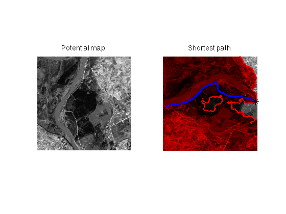
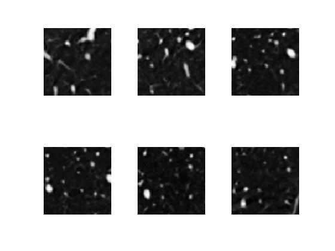
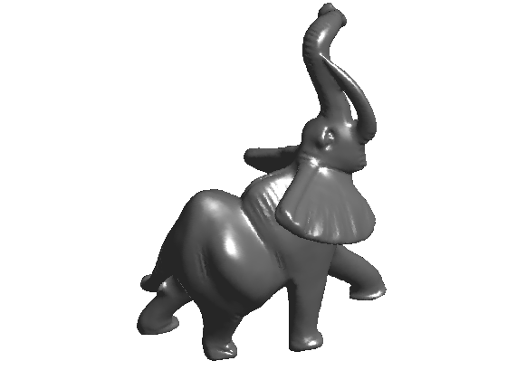

Toolbox Fast Marching - A toolbox for Fast Marching and level sets computations
Copyright (c) 2008 Gabriel Peyre
Contents
The toolbox can be downloaded from Matlab Central http://www.mathworks.com/matlabcentral/fileexchange/loadFile.do?objectId=6110&objectType=FILE
Introduction to Fast Marching and Level Sets
The Fast Marching algorithm, introduced by J. Sethian (1996) is a numerical algorithm that is able to catch the viscosity solution of the Eikonal equation norm(grad(D))=P. The level set {x \ F(x)=t} can be seen as a front advancing with speed P(x).
The resulting function D is a distance function, and if the speed P is constant, it can be seen as the distance function to a set of starting points.
The Fast Marching is very similar to the Dijkstra algorithm that finds shortest paths on graphs. Using a gradient descent of the distance function D, one is able to extract a good approximation of the shortest path (geodesic) in various settings (Euclidean for P constant, and a weighted Riemanian manifold with P varying).
The main reference about the Fast Marching algorithm is the book
- Level Set Methods and Fast Marching Methods Evolving Interfaces in Computational Geometry, Fluid Mechanics, Computer Vision, and Materials Science, J.A. Sethian, Cambridge University Press, 1999, Cambridge Monograph on Applied and Computational Mathematics
A good review of the Fast Marching in 3D together with some applications can be found in
- Fast extraction of minimal paths in 3D images and application to virtual endoscopy, T.Deschamps and L.D. Cohen, Medical Image Analysis, volume 5, Issue 4, December 2001.
Setting-up the Path and Compiling the Mex Files.
Befor begining, we add some directories to the path.
path(path, 'toolbox/'); path(path, 'data/');
The main computation are done in a mex file so it is quite fast (using a Fibonacci heap structure). To compile the mex files, simply run the following lines.
% set up a C compiler % mex -setup % uncomment this line % compile % compile_mex; % uncomment this line
2D Fast Marching Computations
The toolbox allows to compute a distance map from a set of starting point using an arbitrary isotropic metric. This distance map is then used to compute geodesic paths from any point that joins the closest starting point, according to the geodesic distance.
We first load a 2D map, and ask to the user for the starting point.
n = 400; [M,W] = load_potential_map('road2', n); start_point = [16;219]; end_point = [394;192]; % You can use instead the function % [start_point,end_point] = pick_start_end_point(M);
We then perform the front propagation
clear options; options.nb_iter_max = Inf; options.end_points = end_point; % stop propagation when end point reached [D,S] = perform_fast_marching(W, start_point, options); % nicde color for display A = convert_distance_color(D); imageplot({W A}, {'Potential map' 'Distance to starting point'}); colormap gray(256);

At last we can extract the geodesic curve, and display the result.
gpath = compute_geodesic(D,end_point);
plot_fast_marching_2d(W,S,gpath,start_point,end_point, options);
title('Shortest path');
 One can also use several starting and ending points and perform progressive propagation
[M,W] = load_potential_map('mountain', n); % random seeding of the points nstart = 8; nend = 30; start_points = round( rand(2,nstart)*(n-1)+1 ); end_points = round( rand(2,nend)*(n-1)+1 ); % FM computation options.end_points = []; A = {}; nlist = round( linspace(0.05,1,8)*n^2 ); for i=1:length(nlist) options.nb_iter_max = nlist(i); [D,S] = perform_fast_marching(W, start_points, options); mask = repmat(S==-1,[1 1 3]); A{i} = convert_distance_color(D); A{i} = mask.*A{i} + (1-mask) .* repmat(rescale(W),[1 1 3]); end clf; imageplot(A, '', 2,4); % paths extractions gpath = compute_geodesic(D,end_points); % display clf; subplot(1,2,1); imageplot(W,'Potential map'); subplot(1,2,2); plot_fast_marching_2d(A{end},[],gpath,start_points,end_points, options); title('Shortest paths');

3D Volumetric Datasets
You can load a 3D volume of data.
% load the whole volume load ../toolbox_fast_marching_data/brain1-crop-256.mat % crop to retain only the central part n = 100; M = rescale( crop(M,n) ); % display some horizontal slices slices = round(linspace(10,n-10,6)); Mlist = mat2cell( M(:,:,slices), n, n, ones(6,1)); clf; imageplot(Mlist);
You can also perform a volumetric display. By changing the value of options.center, you can display various level sets.
clf;
options.center = .35;
imageplot(M,options);
title('center=.35');

3D Fast Marching
The procedure for volumetric FM is the same as for 2D FM.
We ask to the user for some input points.
delta = 5;
start_point = [91;15;delta];
% You can use instead the function pick_start_end_point
We compute a potential that is high only very close to the value of M at the selected point.
W = abs(M-M(start_point(1),start_point(2),start_point(3))); W = rescale(-W,.001,1); % perform the front propagation options.nb_iter_max = Inf; [D,S] = perform_fast_marching(W, start_point, options); % display the distance map D1 = rescale(D); D1(D>.7) = 0; clf; imageplot(D1,options); alphamap('rampup'); colormap jet(256);

Fast Marching on 3D Meshes
The FM algorithm also works on triangulated meshes (see Kimmel and Sethian paper). The metric is the metric induced by the embedding of the 3D surface in R^3, but one can also modulate this metric by a scalar metric map.
The triangulated mesh is loaded from a .off file. You can see my graph toolbox for more functions for mesh processing.
% load the mesh [vertex,faces] = read_mesh('elephant-50kv'); % display the mesh clf; plot_mesh(vertex, faces); shading interp;
Select some starting point and do the propagation.
start_points = 20361; [D,S,Q] = perform_fast_marching_mesh(vertex, faces, start_points, options);
Extract some geodesics and display the result.
npaths = 30; nverts = size(vertex,2); % select some points that are far enough from the starting point [tmp,I] = sort( D(:) ); I = I(end:-1:1); I = I(1:round(nverts*1)); end_points = floor( rand(npaths,1)*(length(I)-1) )+1; end_points = I(end_points); % precompute some usefull information about the mesh options.v2v = compute_vertex_ring(faces); options.e2f = compute_edge_face_ring(faces); % extract the geodesics options.method = 'continuous'; options.verb = 0; paths = compute_geodesic_mesh(D,vertex,faces, end_points, options); % display options.colorfx = 'equalize'; plot_fast_marching_mesh(vertex,faces, D, paths, options); shading interp;

Fast Marching Inside a 2D Shape
It is possible to retrict the propagation inside a 2D shape.
First we load a 2D shape, which is a BW image
n = 128;
M = rescale( load_image('chicken',n), 0,1 );
M = double(M>0.5);
Compute geodesic distance to a point inside the shape
start_points = [65;65]; % use constant metric W = ones(n); % create a mask to restrict propagation L = zeros(n)-Inf; L(M==1) = +Inf; options.constraint_map = L; % do the FM computation [D,S,Q] = perform_fast_marching(W, start_points, options);
Select a set of end points, here we locate them on the boundary of the shape.
bound = compute_shape_boundary(M); nbound = size(bound,1); npaths = 40; sel = round(linspace(1,nbound+1,npaths+1)); sel(end) = []; end_points = bound(sel,:)';
Extract the geodesics from these ending points
D1 = D; D1(M==0) = 1e9; paths = compute_geodesic(D1,end_points);
We display the result.
ms = 30; lw = 3; % size for plot % display A = convert_distance_color(D); clf; hold on; imageplot(A); axis image; axis off; for i=1:npaths h = plot( paths{i}(2,:), paths{i}(1,:), 'k' ); set(h, 'LineWidth', lw); h = plot(end_points(2,i),end_points(1,i), '.b'); set(h, 'MarkerSize', ms); end h = plot(start_points(2),start_points(1), '.r'); set(h, 'MarkerSize', ms); hold off; colormap jet(256); axis ij;

Farthest Point Sampling
One can sample an image using a greedy algorithm that distribute, at each step, a new point that is located the farthest away from the previously sampled set of points. See the paper of Peyre and Cohen, IJCV.
clear options; n = 400; [M,W] = load_potential_map('mountain', n); npoints_list = round(linspace(20,200,6)); landmark = []; options.verb = 0; ms = 15; clf; for i=1:length(npoints_list) nbr_landmarks = npoints_list(i); landmark = perform_farthest_point_sampling( W, landmark, nbr_landmarks-size(landmark,2), options ); % compute the associated triangulation [D,Z,Q] = perform_fast_marching(W, landmark); % display sampling and distance function D = perform_histogram_equalization(D,linspace(0,1,n^2)); subplot(2,3,i); hold on; imageplot(D'); plot(landmark(1,:), landmark(2,:), 'r.', 'MarkerSize', ms); title([num2str(nbr_landmarks) ' points']); hold off; colormap jet(256); end

Anisotropic Fast Marching
The toolbox also implements anisotropic FM, where at each location, the metric is given by a tensor field.
We first create a 2D vector field. The tensor field is aligned with this tensor field.
n = 200;
U = randn(n,n,2);
options.bound = 'per';
U = perform_vf_normalization( perform_blurring(U, 30,options) );
Create a set of ending points, located on the boundary of the image.
start_points = [n;n]/2;
% end points on the boundary
t = 1:n;
x = [t t*0+n t(end-1:-1:1) t*0+1];
y = [t*0+1 t t*0+n t(end-1:-1:1)];
npaths = 50;
s = round(linspace( 1,length(x), npaths+1) ); s(end) = [];
end_points = cat(1, x(s),y(s));
We build a metric with an increasing level of anisotropy, and perform the FM each time.
% test for various degree of anisotropy aniso_list = [.01 .05 .1 .2 .5 1]; ms = 30; lw = 3; % display params clf; for ianiso = 1:length(aniso_list) % build the tensor field aniso = aniso_list(ianiso); V = cat(3, -U(:,:,2), U(:,:,1)); % orthogonal vector T = perform_tensor_recomp(U,V, ones(n),ones(n)*aniso ); % propagation [D,S,Q] = perform_fast_marching(T, start_points); % for sexy display D1 = perform_histogram_equalization(D, linspace(0,1,n^2)); % extract tons of geodesics paths = compute_geodesic(D,end_points, options); % display subplot(2,3,ianiso); hold on; imageplot(D1); axis image; axis off; colormap jet(256); title(['Anisotropy=' num2str(1-aniso)]); for i=1:npaths end_point = end_points(:,i); h = plot( paths{i}(2,:), paths{i}(1,:), 'k' ); set(h, 'LineWidth', lw); h = plot(end_point(2),end_point(1), '.b'); set(h, 'MarkerSize', ms); end h = plot(start_points(2),start_points(1), '.r'); set(h, 'MarkerSize', ms); hold off; colormap jet(256); axis ij; end